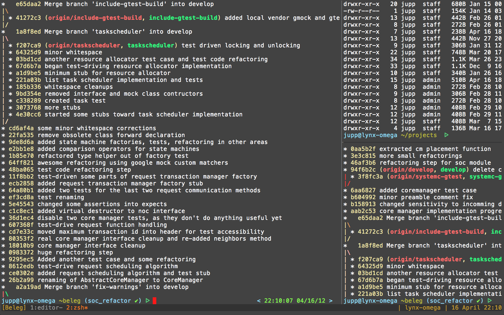
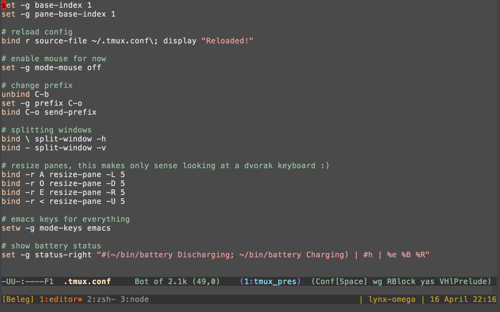

tmux
mouse free development
- Terminal MUltipleXer
- multiple terminals in single screen
- detach from screen
- later reattach
GNU Screen is widely acknowledged as being a largely dead
project, full of bugs, with spaghetti code in the source that
many consider unworthy of the effort of sorting out. This
state of affairs discourages improvements, advancements, or
simple bug fixing.*
- screen's most recent version is 4.0.3, released
in december 2005
- that's been !
time for a rewrite
- client-server model
- vertical splitting
- UTF-8 and 256 colors
- pair programming

- human-readable configuration file
- ever looked at your .screenrc?

- resizable horizontal and vertical(!!) splitting
- people are trying to add vertical splitting to screen
for 5 years now
- scriptable
- plenty of 3rd-party tools
- few dependencies (libevent + ncurses)
- emacs + vi keybindings
- multiple paste buffers
development
- people switched from IDEs to editors
- now switching from gui to console
- MacVim → vim, gVim → vim
- Aquamacs → emacs, gEmacs → emacs
wtf?
- modern languages don't need IDE
- web dev console-heavy, rails/node
- remote workers, mobile connections
- using only keyboard is frickin fast!
- any computer (or phone) does the job
- agile practices and peer programming